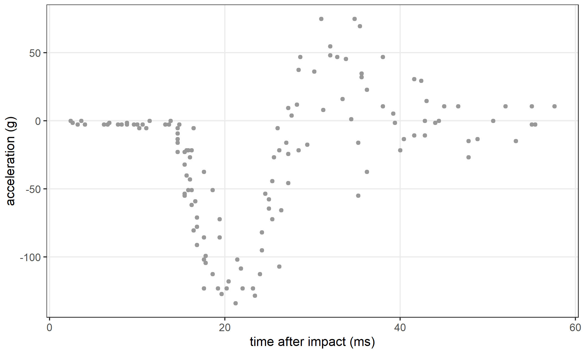
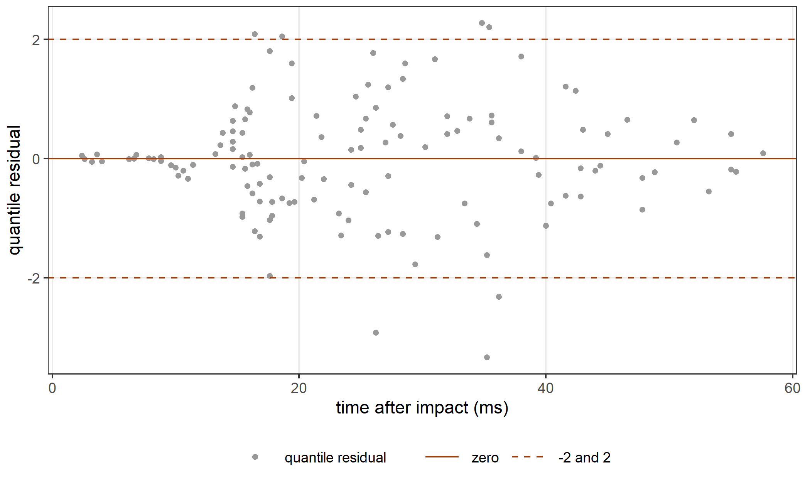
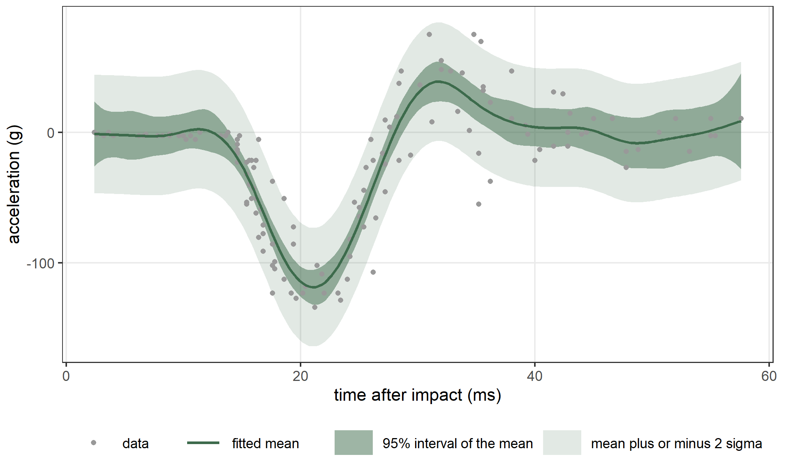
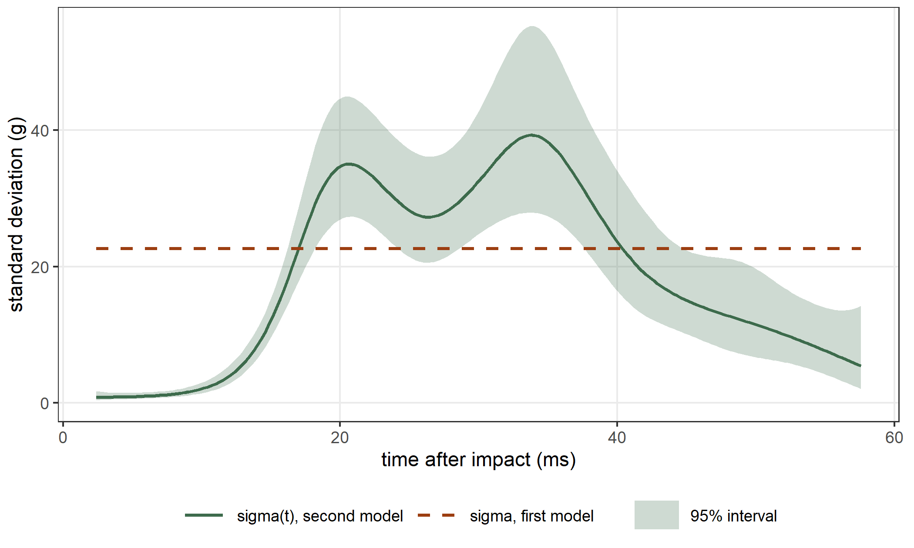
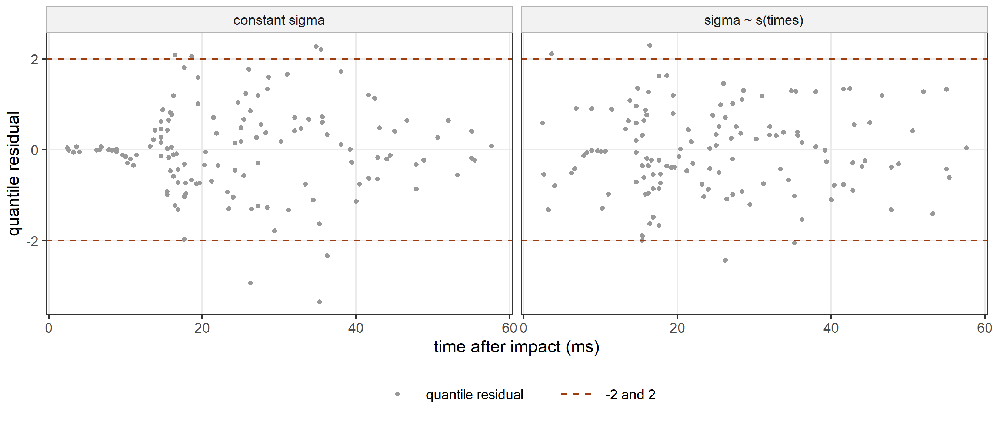
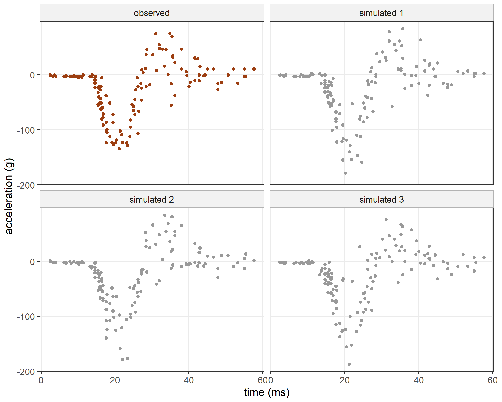

data(mcycle, package = "MASS")
nrow(mcycle)
#> [1] 133
head(mcycle, n = 3)
#> times accel
#> 1 2.4 0.0
#> 2 2.6 -1.3
#> 3 3.2 -2.7
mcycle[which.min(mcycle$accel), ]
#> times accel
#> 62 21.2 -1341 A first model
This chapter fits one model and reads everything that statmod() returns for it. We fit a smooth curve to a data set with a single covariate, print the fit and its summary, extract the estimates and their variances, look at the residuals, and compute predictions. Then we add a second equation for the spread of the data, compare the two models, check that the fit converged, and simulate new data from the fitted model.
1.1 The data
The data come from a simulated motorcycle accident that was used to test crash helmets. They are measurements of the acceleration of the head after the impact. For each observation we know the time after the impact, in milliseconds, and the acceleration of the head, in units of \(g\). Silverman (1985) analyzed these data, and they are distributed with the MASS package (Venables and Ripley 2002).
Figure 1.1 shows the 133 observations. For the first 14.6 milliseconds the acceleration stays within a few units of zero. Then it drops sharply, reaches its minimum of \(-134\,g\) at 21.2 milliseconds, rises above zero, and finally levels off. A polynomial of low degree cannot follow this shape. The spread of the observations around the mean also changes with time: it is small at the start, large during the drop and the rebound, and smaller again at the end.

mcycle data.
1.2 The first fit
We start with a model in which the acceleration \(y_i\) at time \(t_i\) has a gaussian distribution. The mean changes smoothly with time, and the standard deviation is the same for all observations: \[
y_i \sim \mathrm{N}(\mu_i, \sigma), \qquad
\mu_i = \beta_0 + f(t_i).
\] We write \(\mathrm{N}(\mu, \sigma)\) for the gaussian distribution with mean \(\mu\) and standard deviation \(\sigma\), the two parameters of gaussian1_distrib(), and we use this notation throughout the book. We write the function \(f\) as a combination of \(k = 20\) cubic B-splines, \(f(t) = \sum_{r=1}^{20} b_r B_r(t)\). To keep \(f\) smooth, we subtract from the log-likelihood a penalty on its curvature. We measure the curvature by the integral of the squared second derivative: \[
\tfrac{1}{2}\lambda \int f''(t)^2\,dt = \tfrac{1}{2}\lambda\, b^\top P b ,
\] where \(P\) is the matrix with entries \(P_{rs} = \int B_r''(t)\,B_s''(t)\,dt\). The smoothing parameter \(\lambda\) controls how much the curve can bend. A large \(\lambda\) gives a curve close to a straight line, and a small \(\lambda\) lets the curve follow the data closely.
For a given \(\lambda\), statmod() estimates the coefficients by maximizing the penalized log-likelihood, which is the log-likelihood minus the penalty. It estimates \(\lambda\) by restricted maximum likelihood (REML). For REML we read the penalty as a prior distribution on the coefficients, integrate the coefficients out of the likelihood, and maximize the result over \(\lambda\) (Wood 2011, 2017). In statmodels7 we write the model like this:
library(statmodels7)
fit0 <- statmod(accel ~ s(times, bspline_smooth(k = 20)),
distrib = gaussian1_distrib(), data = mcycle)The term s(times, bspline_smooth(k = 20)) is a penalized smooth function of times. Its second argument, bspline_smooth(k = 20), defines how the function is built: from a basis of 20 cubic B-splines, with a penalty on the second derivative. The distribution gaussian1_distrib() is the gaussian distribution with two parameters, the mean mu and the standard deviation sigma. The formula has an equation only for the mean, so statmod() estimates sigma as a single constant. Printing the fit gives a short description of it:
fit0
#> A statmod fit
#>
#> Call: statmod(formula = accel ~ s(times, bspline_smooth(k = 20)), distrib = gaussian1_distrib(),
#> data = mcycle)
#>
#> Distribution: gaussian1
#> Observations: 133
#>
#> mu ~ s(times, bspline_smooth(k = 20))
#> linpar 1 coef
#> s(times, bspline_smooth(k = 20)) 19 coef, edf 11.70
#> sigma ~ 1
#> linpar 1 coef
#>
#> REML -618.020028 over 19 hyperparameter evaluation(s)
#> fitted in 1.61 sThe printout lists the equation of each parameter of the distribution and the terms in it. The equation of mu has two terms: linpar, which holds the intercept, and the smooth. The smooth has 19 coefficients, one fewer than the number of B-splines, and we explain why in the next section. The number edf is its effective degrees of freedom, which we define in Section 1.9. The equation of sigma contains only an intercept. The line that starts with REML gives the value of the REML criterion at the estimate and the number of values of \(\lambda\) that the search evaluated. The last line gives the time the fit took.
1.3 The summary
The function summary() prints the estimates one equation at a time.
summary(fit0)
#> A statmod fit
#>
#> Call: statmod(formula = accel ~ s(times, bspline_smooth(k = 20)), distrib = gaussian1_distrib(),
#> data = mcycle)
#>
#> Distribution: gaussian1 Observations: 133
#>
#> === mu [identity link]
#>
#> Parametric terms
#> estimate se z p lower upper
#> (Intercept) -25.55 1.966 -12.99 < 1e-16 -29.4 -21.69
#>
#> s(times, bspline_smooth(k = 20)) [19 coefficients, edf 11.70]
#> estimate se z p lower upper
#> lambda [reml] 6.624e-05 2.857e-05 2.844e-05 0.0001543
#> lin 14.32 1.973 7.258 3.921e-13 10.46 18.19
#>
#> === sigma [log link]
#>
#> Parametric terms
#> estimate se z p lower upper
#> (Intercept) 3.121 0.06445 48.42 < 1e-16 2.995 3.247
#>
#> 95% intervals, bayesian variance
#> conditional log-likelihood -597.478187 effective df 13.70
#> cAIC 1222.351 cBIC 1261.942
#> fitted in 1.61 s
#> inner max |grad|/se 1.1e-15 min eigen 1
#> outer max |grad|/se 7.1e-15 min eigen 1
#> 1 note: print(summary(fit), notes = TRUE)The block of each equation starts with the name of the parameter and its link function. The mean uses the identity link, so its equation describes \(\mu_i\) directly. The standard deviation uses the log link, so its equation describes \(\log\sigma\).
The table Parametric terms holds the coefficients without a penalty, here the intercepts. For each of them it gives the estimate, the standard error, the Wald statistic \(z\) (the estimate divided by its standard error), the p-value of the test that the coefficient is zero, and a 95% confidence interval. The intercept of sigma is on the log scale: \(\log\hat\sigma =
3.121\), so \(\hat\sigma = 22.67\).
Each smooth term has a block of its own. The heading of the block gives the number of coefficients of the term and its effective degrees of freedom. The smooth has 19 coefficients, one fewer than the 20 B-splines. The B-splines add up to one at every time, so together they contain the constant function, and the intercept of the equation already represents the constant. For this reason statmod() constrains the smooth to sum to zero over the observed times, and this removes one coefficient.
The first row of the block is the smoothing parameter. The label [reml] means that REML estimated it. Its interval is computed on the log scale and then transformed back, so it contains only positive values. The second row, lin, is the linear part of the smooth. The penalty on the second derivative is zero for a straight line, so this coefficient is not penalized, and we can test it like any other coefficient. It multiplies the time standardized to mean zero and standard deviation one, so its value is the slope of the linear part of \(f\) per standard deviation of time:
sd(mcycle$times)
#> [1] 13.13206The other 18 coefficients of the smooth are not printed. Their values depend on how the basis is written, so one by one they have no meaning.
The lines at the bottom are about the fit as a whole. The log-likelihood is the conditional log-likelihood, which is computed at the estimated coefficients. cAIC is minus twice this value plus twice the effective degrees of freedom (Vaida and Blanchard 2005), and cBIC uses \(\log n\) in place of the factor 2. Section 1.9 computes both.
The lines inner and outer describe the point where the fit stopped. We call curvature the negative of the matrix of second derivatives. The line inner is about the coefficients. Its first number is the largest component of the gradient of the penalized log-likelihood, where each component is divided by the standard error that its coefficient would have if the other coefficients were known. Its second number is the smallest eigenvalue of the curvature of the penalized log-likelihood, after the curvature is rescaled to have ones on its diagonal. The line outer gives the same two numbers for the REML criterion as a function of the smoothing parameter. At a maximum the first number is close to zero and the second is positive. In this fit both lines meet these two conditions. Section 1.10 checks the same thing with another function.
The last line gives the command that prints the notes of the summary. For this fit there is one note. It states that the interval of the smoothing parameter is built on the log scale and mapped back, and that the other estimates are conditional on the estimated value of \(\lambda\).
1.4 Coefficients and their variances
The function coef() returns a list with one element for each parameter of the distribution. Each element holds the coefficients of that parameter’s equation, on the scale of its link function.
coef(fit0)
#> $mu
#> (Intercept) s(times).lin s(times).z1 s(times).z2 s(times).z3 s(times).z4
#> -25.545865 14.322816 -12.901711 -68.642419 -0.736675 204.945127
#> s(times).z5 s(times).z6 s(times).z7 s(times).z8 s(times).z9 s(times).z10
#> -152.020677 -177.431446 230.159963 21.350198 9.405679 37.956057
#> s(times).z11 s(times).z12 s(times).z13 s(times).z14 s(times).z15 s(times).z16
#> 35.587949 -17.679424 15.187009 -3.990528 -24.943484 50.477257
#> s(times).z17 s(times).z18
#> 6.792596 -4.237126
#>
#> $sigma
#> (Intercept)
#> 3.121114The coefficients named s(times).z1 to s(times).z18 are the penalized coefficients of the smooth. As we said above, they have no meaning one by one. The function vcov() returns the variance matrix of all the coefficients, here a matrix with 21 rows and columns. We print the rows and columns of the two intercepts and of the linear part of the smooth:
V <- vcov(fit0)
dim(V)
#> [1] 21 21
keep <- c("mu:(Intercept)", "mu:s(times).lin", "sigma:(Intercept)")
V[keep, keep]
#> mu:(Intercept) mu:s(times).lin sigma:(Intercept)
#> mu:(Intercept) 3.864678e+00 1.566340e-16 0.000000000
#> mu:s(times).lin 1.566340e-16 3.893956e+00 0.000000000
#> sigma:(Intercept) 0.000000e+00 0.000000e+00 0.004154364The covariances between the coefficients of mu and the coefficient of sigma are exactly zero. For the gaussian distribution the mean and the standard deviation carry separate information, so the block of the Fisher information that connects the two equations is zero, and so is the corresponding block of the variance matrix. The covariance between the intercept of mu and the linear part of the smooth is zero up to rounding, because the linear column has mean zero.
The function confint() returns a data frame with one row for each coefficient: the estimate, the standard error and the two ends of a 95% interval. With the argument parm we choose the coefficients:
ci0 <- confint(fit0, parm = keep)
ci0
#> parameter term coefficient
#> mu:(Intercept) mu linpar (Intercept)
#> mu:s(times).lin mu s(times, bspline_smooth(k = 20)) s(times).lin
#> sigma:(Intercept) sigma linpar (Intercept)
#> estimate se lower upper
#> mu:(Intercept) -25.545865 1.96587853 -29.398916 -21.692814
#> mu:s(times).lin 14.322816 1.97331099 10.455198 18.190435
#> sigma:(Intercept) 3.121114 0.06445435 2.994786 3.247442The standard errors are the square roots of the diagonal of V, and each interval is the estimate plus or minus 1.96 standard errors:
sqrt(diag(V[keep, keep]))
#> mu:(Intercept) mu:s(times).lin sigma:(Intercept)
#> 1.96587853 1.97331099 0.06445435
ci0$estimate - qnorm(p = 0.975) * ci0$se
#> [1] -29.398916 10.455198 2.994786
ci0$estimate + qnorm(p = 0.975) * ci0$se
#> [1] -21.692814 18.190435 3.2474421.5 The smoothing parameter
The smoothing parameter is not a coefficient of an equation, so coef() does not return it. The function hyper() returns the hyperparameters of the model, which here are the one smoothing parameter.
hyper(fit0)
#> parameter term name estimate held source
#> 1 mu s(times, bspline_smooth(k = 20)) lambda 6.624199e-05 FALSE reml
#> id
#> 1 <NA>The column estimate holds the value, and the column source records how it was estimated, here by REML. The column held is TRUE for a value that we fix in the formula instead of estimating it. For example, s(times, bspline_smooth(k = 20), hyper = c(lambda = 1)) holds \(\lambda\) at 1. The column id names a group of terms that share one hyperparameter, and it is empty here.
1.6 Fitted values and residuals
The function fitted() returns the fitted mean \(\hat\mu_i\) of each observation:
head(fitted(fit0))
#> [1] -1.092664 -1.183662 -1.421184 -1.558819 -1.688142 -2.544792The function residuals() returns quantile residuals (Dunn and Smyth 1996). For observation \(i\) with fitted distribution function \(\hat F_i\), the quantile residual is \[
r_i = \Phi^{-1}\big(\hat F_i(y_i)\big),
\] where \(\Phi\) is the standard gaussian distribution function. If the model is right, \(\hat F_i(y_i)\) is close to a uniform variable, so \(r_i\) is close to a standard gaussian variable, whatever the distribution of the response. For a gaussian response \(r_i\) equals \((y_i - \hat\mu_i)/\hat\sigma_i\):
r0 <- residuals(fit0)
head(r0)
#> [1] 0.048195255 -0.005131449 -0.056406053 0.068756426 -0.044631033 -0.006845926
s0 <- exp(coef(fit0)$sigma)
head((mcycle$accel - fitted(fit0)) / s0)
#> [1] 0.048195255 -0.005131449 -0.056406053 0.068756426 -0.044631033 -0.006845926If the model is right, the residuals should have a standard deviation close to 1 in every part of the time range. We compute it separately for the early phase before 15 milliseconds, for the drop and rebound between 15 and 40 milliseconds, and for the late phase:
early <- mcycle$times < 15
middle <- mcycle$times >= 15 & mcycle$times < 40
late <- mcycle$times >= 40
sd(r0[early])
#> [1] 0.2876631
sd(r0[middle])
#> [1] 1.155956
sd(r0[late])
#> [1] 0.625451
sum(abs(r0) > 2)
#> [1] 7The standard deviation is 0.29 in the early phase, 1.16 in the middle and 0.63 at the end. The model uses one value of \(\sigma\) for all times, so it overstates the spread at the start and understates it in the middle. Figure 1.2 shows the same thing: the residuals are small at the start, large in the middle and moderate at the end. Of the 133 residuals, 7 lie outside \(\pm 2\), and they all fall in the middle phase.

1.7 Predictions
The function predict() computes a parameter of the fitted distribution at new values of the covariates. Its second argument names the parameter, and newdata holds the covariates. With se = TRUE it also gives a standard error and a 95% interval:
new <- data.frame(times = c(5, 20, 30, 50))
predict(fit0, what = "mu", newdata = new, se = TRUE)
#> fit se lower upper
#> 1 -2.021525 9.295882 -20.24112 16.19807
#> 2 -114.311565 5.884913 -125.84578 -102.77735
#> 3 29.917397 6.847840 16.49588 43.33892
#> 4 -7.130247 10.496591 -27.70319 13.44269For the mean, the interval is the prediction plus or minus 1.96 standard errors. For a parameter with a link function, the interval is computed on the scale of the link and then transformed back. For \(\sigma\) this is the log scale, so the interval for \(\sigma\) contains only positive values. In this model \(\sigma\) is the same at every time:
predict(fit0, what = "sigma", newdata = new, se = TRUE)
#> fit se lower upper
#> 1 22.67162 1.461284 19.98108 25.72445
#> 2 22.67162 1.461284 19.98108 25.72445
#> 3 22.67162 1.461284 19.98108 25.72445
#> 4 22.67162 1.461284 19.98108 25.72445Figure 1.3 shows the fitted mean on a grid of 200 times, with two bands. The dark band is the 95% interval of the mean from predict(se = TRUE). It describes the uncertainty of the estimated curve. The light band is \(\hat\mu(t) \pm 2\hat\sigma\), the range where about 95% of the observations should fall if the model is right.
grid <- data.frame(times = seq(from = min(mcycle$times),
to = max(mcycle$times), length.out = 200))
p0 <- predict(fit0, what = "mu", newdata = grid, se = TRUE)
head(p0, n = 3)
#> fit se lower upper
#> 1 -1.092664 12.73275 -26.04839 23.86307
#> 2 -1.217079 11.35930 -23.48089 21.04673
#> 3 -1.329645 10.35117 -21.61756 18.95827
The fitted mean follows the data closely, but the light band has the same width everywhere. It is far too wide in the first milliseconds and too narrow during the drop and the rebound. Changing \(\lambda\) does not help, because the problem is the assumption of a constant standard deviation.
1.8 An equation for the standard deviation
To fix this, we let the standard deviation change smoothly with time as well: \[
y_i \sim \mathrm{N}(\mu_i, \sigma_i), \qquad
\mu_i = \beta_0 + f(t_i), \qquad
\log \sigma_i = \gamma_0 + g(t_i).
\] Here \(g\) is a second penalized smooth function, with its own smoothing parameter. We model \(\log\sigma_i\) rather than \(\sigma_i\) so that \(\sigma_i\) is always positive. A model with an equation for each parameter of the distribution is called a generalized additive model for location, scale and shape (Rigby and Stasinopoulos 2005). In statmodels7 we write it like this:
fit1 <- statmod(accel ~ s(times, bspline_smooth(k = 20)) |
sigma ~ s(times, bspline_smooth(k = 10)),
distrib = gaussian1_distrib(), data = mcycle)
fit1
#> A statmod fit
#>
#> Call: statmod(formula = accel ~ s(times, bspline_smooth(k = 20)) |
#> sigma ~ s(times, bspline_smooth(k = 10)), distrib = gaussian1_distrib(),
#> data = mcycle)
#>
#> Distribution: gaussian1
#> Observations: 133
#>
#> mu ~ s(times, bspline_smooth(k = 20))
#> linpar 1 coef
#> s(times, bspline_smooth(k = 20)) 19 coef, edf 14.23
#> sigma ~ s(times, bspline_smooth(k = 10))
#> linpar 1 coef
#> s(times, bspline_smooth(k = 10)) 9 coef, edf 6.56
#>
#> REML -585.055560 over 28 hyperparameter evaluation(s)
#> fitted in 1.74 sThe formula now contains two equations, separated by a vertical bar. The equation before the bar has the response on the left, and it describes the first parameter of the distribution, which is mu. The equation after the bar has the name of a parameter on the left, sigma, and it describes that parameter. In general there is one equation for each parameter that we want to model. If the formula has no equation for a parameter, statmod() estimates that parameter as a constant, as it did for sigma in the first model. The link functions are those of the distribution, so the right-hand side of the second equation describes \(\log\sigma_i\).
The summary now has a smooth block in each equation:
summary(fit1)
#> A statmod fit
#>
#> Call: statmod(formula = accel ~ s(times, bspline_smooth(k = 20)) |
#> sigma ~ s(times, bspline_smooth(k = 10)), distrib = gaussian1_distrib(),
#> data = mcycle)
#>
#> Distribution: gaussian1 Observations: 133
#>
#> === mu [identity link]
#>
#> Parametric terms
#> estimate se z p lower upper
#> (Intercept) -25.1 2.06 -12.18 < 1e-16 -29.14 -21.07
#>
#> s(times, bspline_smooth(k = 20)) [19 coefficients, edf 14.23]
#> estimate se z p lower upper
#> lambda [reml] 6.739e-05 2.876e-05 2.92e-05 0.0001555
#> lin 14.09 1.344 10.48 < 1e-16 11.45 16.72
#>
#> === sigma [log link]
#>
#> Parametric terms
#> estimate se z p lower upper
#> (Intercept) 2.704 0.06844 39.51 < 1e-16 2.57 2.838
#>
#> s(times, bspline_smooth(k = 10)) [9 coefficients, edf 6.56]
#> estimate se z p lower upper
#> lambda [reml] 0.3645 0.3052 0.07061 1.881
#> lin 0.4721 0.07619 6.196 5.776e-10 0.3228 0.6214
#>
#> 95% intervals, bayesian variance
#> conditional log-likelihood -537.852231 effective df 22.80
#> cAIC 1121.295 cBIC 1187.181
#> fitted in 1.74 s
#> inner max |grad|/se 2.9e-14 min eigen 0.004
#> outer max |grad|/se 4.9e-11 min eigen 0.71
#> 1 note: print(summary(fit), notes = TRUE)The two smoothing parameters are estimated by REML together. The linear part of the smooth of \(\log\sigma\) has a positive estimate with a p-value well below 0.001, so the standard deviation grows with time on average. The smooth adds curvature to this trend. We compute \(\hat\sigma(t)\) at four times with its interval:
predict(fit1, what = "sigma", newdata = new, se = TRUE)
#> fit se lower upper
#> 1 0.9298124 0.2191212 0.5858679 1.475676
#> 2 34.6756211 4.4789820 26.9200718 44.665509
#> 3 32.5272066 4.5365012 24.7475083 42.752554
#> 4 11.4971229 3.1573440 6.7116902 19.694567Figure 1.4 shows \(\hat\sigma(t)\) over the whole time range. It is 0.93 \(g\) at 5 milliseconds, in the early flat phase. It reaches a maximum of 39.3 \(g\) at 33.7 milliseconds and falls to 11.5 \(g\) at 50 milliseconds. The constant estimate of the first model, 22.67 \(g\), is too large at the start and at the end, and too small in the middle.

The quantile residuals of the second model divide each observation by its own \(\hat\sigma_i\). We compute their standard deviation in the same three phases as before:
r1 <- residuals(fit1)
sd(r1[early])
#> [1] 0.8257158
sd(r1[middle])
#> [1] 0.9576339
sd(r1[late])
#> [1] 0.904756
sum(abs(r1) > 2)
#> [1] 4The three values are now 0.83, 0.96 and 0.90, all close to 1, and 4 residuals lie outside \(\pm 2\), against the 6.1 that a standard gaussian sample of 133 values gives on average. Figure 1.5 shows the residuals of the two models side by side.

1.9 Comparing the two models
A penalized coefficient does not count as a whole parameter, because the penalty limits how far it can move. So we need another way to count the parameters of a penalized fit. Let \(\tilde\beta\) be the estimate without the penalty, let \(H\) be the Fisher information of the coefficients at the fit, and let \(S\) be the matrix of second derivatives of the penalty. One Newton step from \(\tilde\beta\) towards the penalized estimate gives \[
\hat\beta = (H+S)^{-1} H \tilde\beta .
\] The matrix \(F = (H+S)^{-1}H\) turns the unpenalized estimate into the penalized one. Without a penalty, \(S = 0\) and \(F\) is the identity matrix, so its trace is the number of coefficients. As the smoothing parameters grow, the trace falls towards the number of unpenalized coefficients. For this reason we use the trace of \(F\) as the number of parameters that the fit uses, and we call it the effective degrees of freedom. The share of one term is the trace of the diagonal block of \(F\) that belongs to that term. The fit stores the shares in the slot edf:
fit0@edf
#> parameter term coefficients edf
#> 1 mu linpar 1 1.00000
#> 2 mu s(times, bspline_smooth(k = 20)) 19 11.69755
#> 3 sigma linpar 1 1.00000
fit1@edf
#> parameter term coefficients edf
#> 1 mu linpar 1 1.000000
#> 2 mu s(times, bspline_smooth(k = 20)) 19 14.234888
#> 3 sigma linpar 1 1.000000
#> 4 sigma s(times, bspline_smooth(k = 10)) 9 6.560396The smooth of the mean uses 11.70 effective degrees of freedom in the first model and 14.23 in the second, where the smooth of the standard deviation uses 6.56 more. The share of the smooth of the mean changes between the two models because the information of the mean weights each observation by \(1/\sigma_i^2\). In the first model all the weights are equal, and in the second they change with time.
The function logLik() returns the conditional log-likelihood, with the total effective degrees of freedom as its attribute df. The functions AIC() and BIC() return cAIC and cBIC:
logLik(fit0)
#> 'log Lik.' -597.4782 (df=13.69755)
logLik(fit1)
#> 'log Lik.' -537.8522 (df=22.79528)
AIC(fit0)
#> [1] 1222.351
AIC(fit1)
#> [1] 1121.295
BIC(fit0)
#> [1] 1261.942
BIC(fit1)
#> [1] 1187.181cAIC is \(-2\ell + 2\tau\), where \(\ell\) is the conditional log-likelihood and \(\tau\) the total effective degrees of freedom, and cBIC uses \(\log n\) in place of 2. We compute both for the second model:
l1 <- as.numeric(logLik(fit1))
tau1 <- sum(fit1@edf$edf)
-2 * l1 + 2 * tau1
#> [1] 1121.295
-2 * l1 + log(nrow(mcycle)) * tau1
#> [1] 1187.181When we model the standard deviation, the conditional log-likelihood increases by 59.63, and the model uses 9.10 more effective degrees of freedom. cAIC goes down from 1,222.4 to 1,121.3 and cBIC from 1,261.9 to 1,187.2, so by both criteria the second model is better.
The effective degrees of freedom also give the estimate of \(\sigma\) in the first model. REML estimates \(\sigma\) as \(\sqrt{\mathrm{RSS}/(n - \tau_\mu)}\), where RSS is the residual sum of squares and \(\tau_\mu\) is the effective degrees of freedom of the equation of the mean. This is the value that lme() and mgcv report. The maximum likelihood estimate \(\sqrt{\mathrm{RSS}/n}\) is smaller, because the residuals of a fitted mean are smaller than the errors:
rss <- sum((mcycle$accel - fitted(fit0))^2)
tau_mu <- sum(fit0@edf$edf[fit0@edf$parameter == "mu"])
sqrt(rss / (nrow(mcycle) - tau_mu))
#> [1] 22.67162
sqrt(rss / nrow(mcycle))
#> [1] 21.56224
s0
#> (Intercept)
#> 22.671621.10 Did the fit converge?
An optimizer reports whether its own stopping rule was met. This is a statement about the search, not about the returned point. The function statmod_certificate() checks the returned point itself.
statmod_certificate(fit0)
#> $state
#> [1] "converged"
#>
#> $decrement
#> [1] 2.539627e-29
#>
#> $gradient
#> [1] 1.101341e-13
#>
#> $mode_error
#> [1] 1.674877e-30
#>
#> $curvature
#> [1] "analytic"
#>
#> $boundary
#> character(0)
#>
#> $boundary_key
#> character(0)
#>
#> $ridge
#> list()
#>
#> $reason
#> character(0)
#>
#> $inner
#> gradient eigen
#> 1.114301e-15 1.000000e+00
#>
#> $outer
#> gradient eigen
#> 7.098624e-15 9.985287e-01The certificate reads two quantities. The first, mode_error, is about the coefficients. Let \(g\) be the gradient of the penalized log-likelihood at the returned coefficients and let \(K\) be its curvature. The quantity \(\tfrac{1}{2} g^\top K^{-1} g\) is the increase of the penalized log-likelihood that one more Newton step would give, so it measures, in log-likelihood units, how far the coefficients are from their maximum. Here it is \(1.7 \times 10^{-30}\). The second, decrement, is the same quantity for the REML criterion as a function of the smoothing parameter. Here it is \(2.5 \times 10^{-29}\). The field curvature is analytic, so the curvature of the criterion was computed from exact derivatives. The fields inner and outer are the two lines of the summary. The fields boundary and reason are empty: no smoothing parameter sits at the edge of its range, and nothing prevented the check.
The field state summarizes the result. It is converged when the decrement is below its tolerance. It is boundary when the same holds with a smoothing parameter at the edge of its range, where the criterion no longer changes with it. It is not converged when the criterion would still increase, and unknown when the model has no criterion with derivatives to check. For the second model we print only the state:
statmod_certificate(fit1)$state
#> [1] "converged"1.11 Simulating from the fitted model
The fitted model gives, for each observation, a distribution for the response: here a gaussian distribution with mean \(\hat\mu_i\) and standard deviation \(\hat\sigma_i\). If the model describes the data well, data drawn from these distributions should look like the observed data. The function rstatmod() draws data from a model that we write, with a formula, a distribution and the covariates. The argument par gives the coefficients of each equation. When we pass the estimated coefficients, the model is the fitted one:
set.seed(1)
sim <- rstatmod(accel ~ s(times, bspline_smooth(k = 20)) |
sigma ~ s(times, bspline_smooth(k = 10)),
distrib = gaussian1_distrib(), data = mcycle,
par = coef(fit1), n_sim = 3)
sim
#> A simulation from a written model
#>
#> 133 observations, 2 columns, 3 replicates
#> mu -25.1038 14.0865 ... 20 values, sd 99.9698
#> sigma 2.7038 0.4721 ... 10 values, sd 1.4658
#>
#> the data sets are in $data[[k]], the truth in $parThe result holds the simulated data sets in sim$data, one data frame for each of the n_sim = 3 replicates, and the true value of every parameter at every observation in sim$theta. Here the true values are the fitted ones:
head(sim$data[[1]])
#> times accel
#> 1 2.4 -0.71418404
#> 2 2.6 0.06900358
#> 3 3.2 -0.79081996
#> 4 3.6 -2.38419783
#> 5 4.0 -0.05275563
#> 6 6.2 -2.44015330
all.equal(target = sim$theta[[1]]$sigma,
current = predict(fit1, what = "sigma", newdata = mcycle))
#> [1] TRUEThe function simulate() draws from a fitted model directly, and it returns the simulated responses as the columns of a data frame:
set.seed(1)
sims <- simulate(fit1, nsim = 3)
head(sims, n = 3)
#> sim_1 sim_2 sim_3
#> 1 -1.0476298 -1.8145419 -0.8719936
#> 2 -0.6839923 -0.5781968 -1.8655574
#> 3 -2.2839599 -2.8916213 -1.8464399With rstatmod() we can also change the model. For example, we can keep the estimated coefficients of the mean and write other coefficients for the standard deviation, or leave out par and let rstatmod() draw every coefficient. A simulation study with a known truth starts in this way.

rstatmod().
In Figure 1.6 the simulated data look like the observed data. They are flat in the first milliseconds, they drop and come back up at the same times, and their spread changes with time in the same way.